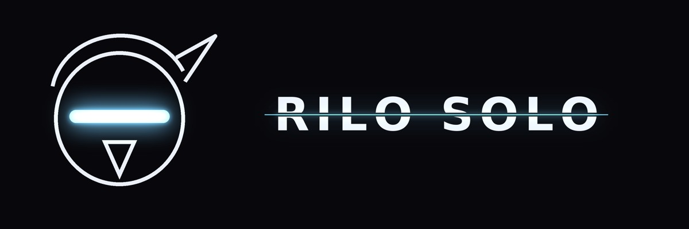

<title>Rilo Solo</title>
<link rel="stylesheet" href="https://fonts.googleapis.com/css2?family=Fraunces:ital,opsz,wght@1,9..144,500&family=DM+Sans:wght@400;600&display=swap">
<style>
:root{--bg:#eef0f7;--card:#ffffff;--ink:#1c1f33;--mute:#5d6283;--acc:#6b4fd8;--line:#d9dcea}
@media (prefers-color-scheme:dark){:root:not([data-theme="light"]){--bg:#0e1020;--card:#171a30;--ink:#e8e9f5;--mute:#9a9ec0;--acc:#a996ff;--line:#2a2e4c;color-scheme:dark}}
:root[data-theme="dark"]{--bg:#0e1020;--card:#171a30;--ink:#e8e9f5;--mute:#9a9ec0;--acc:#a996ff;--line:#2a2e4c;color-scheme:dark}
body{background:var(--bg);color:var(--ink);font:16px/1.6 "DM Sans",system-ui,sans-serif;padding:32px 16px}
main{max-width:640px;margin:0 auto;display:grid;gap:24px}
h1{font:italic 500 clamp(2.2rem,8vw,3.4rem)/1.05 Fraunces,Georgia,serif;margin:0;text-wrap:balance}
.meta{color:var(--mute);font-size:.8rem;letter-spacing:.08em;text-transform:uppercase;margin:0}
.track{background:var(--card);border:1px solid var(--line);border-radius:12px;padding:16px;display:grid;gap:8px}
.track h2{font-size:1rem;margin:0}.track p{margin:0;color:var(--mute);font-size:.9rem}
audio{width:100%}
a{color:var(--acc)}
.lyrics h3{font-size:.75rem;letter-spacing:.1em;text-transform:uppercase;color:var(--acc);margin:20px 0 4px}
.lyrics p{margin:0;max-width:60ch}
</style>
<main>
  
  <header>
    <p class="meta">Masked artist · black &amp; white · Bay Area noir</p>
    <h1>Rilo Solo</h1>
    
  </header>
  <section class="track"><h2>NEW: Say It First</h2><p>Moody late-night Toronto-style R&amp;B rap, 70 BPM: underwater pads, muffled piano, booming 808s, a sung hook and introspective verses.</p><audio controls preload="metadata" src="say_it_first.mp3"></audio></section>
  <section class="track"><h2>NEW: Oru</h2><p>Dark afro house, 124 BPM: a soulful African lead vocal hook with a chanting choir answering, a heavy rolling bass and tribal percussion.</p><audio controls preload="metadata" src="oru.mp3"></audio></section>
  <section class="track"><h2>Blue Light Girls</h2><p>Dreamy piano hip-hop, 96 BPM: laid-back rap verses and a falsetto hook about loving someone through a screen.</p><audio controls preload="metadata" src="blue_light_girls.mp3"></audio></section>
  <section class="track"><h2>Sankofa</h2><p>Club afro house, 122 BPM: four-on-the-floor kick, nonstop afro percussion, a bouncy bassline and a catchy African vocal chant hook.</p><audio controls preload="metadata" src="sankofa.mp3"></audio></section>
  <section class="track"><h2>Kalunga</h2><p>Soulful afro house, 120 BPM: warm rolling bass, congas and shakers, West African style call-and-response vocals, Rhodes and kalimba.</p><audio controls preload="metadata" src="kalunga.mp3"></audio></section>
  <section class="track"><h2>Ìjìnlẹ̀ (Club Master v2, harder)</h2><p>Harder and louder (-6.9 LUFS) with more sub and drive. The transitions are fixed: the breakdown drops back and the drop slams in, with no volume pumping.</p><audio controls preload="metadata" src="ijinle_club_v2.mp3"></audio></section>
  <section class="track"><h2>Ìjìnlẹ̀ (Smooth Club Master)</h2><p>Deep and heavy but smoother: warm sub, softened highs, gentle compression and a touch of space. Club-ready without the harshness.</p><audio controls preload="metadata" src="ijinle_smooth.mp3"></audio></section>
  <section class="track"><h2>Ìjìnlẹ̀ (Club Master)</h2><p>The same track, harder: more sub, grit and compression, mastered to club level (about -8.6 LUFS).</p><audio controls preload="metadata" src="ijinle_club.mp3"></audio></section>
  <section class="track"><h2>Ìjìnlẹ̀ (Ijinle)</h2><p>Dark afro house and melodic techno, 125 BPM: afro tribal chants, a bass-heavy rolling groove, congas and djembe, and a hypnotic dark hook.</p><audio controls preload="metadata" src="ijinle.mp3"></audio></section>
  <section class="track"><h2>Tribal Ritual (Hard Mix)</h2><p>The same track with more sub, grit and compression, mastered much louder (-7 LUFS, club level).</p><audio controls preload="metadata" src="tribal_ritual_hard.mp3"></audio></section>
  <section class="track"><h2>Obsidian</h2><p>Harder, darker, heavier techno, 136 BPM: distorted kick, rumbling sub, the hook in the first 15 seconds, and a big heavy drop.</p><audio controls preload="metadata" src="obsidian.mp3"></audio></section>
  <section class="track"><h2>Tribal Ritual</h2><p>Dark peak-time melodic techno, 132 BPM: rumbling kick, rolling bass, tribal percussion, a hypnotic hook and chopped ethnic vocals.</p><audio controls preload="metadata" src="tribal_ritual.mp3"></audio></section>
  <section class="track"><h2>Black Feather (hard techno)</h2><p>150 BPM warehouse hard techno: distorted rumble kick, acid 303 bass, industrial percussion, dark stabs and a big drop.</p><audio controls preload="metadata" src="black_feather.mp3"></audio></section>
  <section class="track"><h2>Afterglow Protocol</h2><p>Dark melodic techno instrumental, 124 BPM, A minor: rolling bass, evolving arpeggios, a long breakdown and a big drop.</p><audio controls preload="metadata" src="afterglow_protocol.mp3"></audio></section>
  <section class="track"><h2>One Night in Black and White</h2><p>Smooth doo-wop hip-hop, confident verses and a crooner hook: "She's a lady killer, dressed up in the midnight."</p><audio controls preload="metadata" src="one_night_in_black_and_white.mp3"></audio></section>
  <section class="track"><h2>Late Night Scroll · sung version</h2><p>The full song with AI-generated rap verses and a sung hook.</p><audio controls preload="metadata" src="late_night_scroll_vocals.mp3"></audio></section>
  <section class="track"><h2>Melody guide</h2><p>Arrangement with the "choir aahs" melody guide showing how to sing the hook.</p><audio controls preload="metadata" src="late_night_scroll.mp3"></audio></section>
  <section class="track"><h2>Instrumental</h2><p>A simpler beat with no melody guide, to rap or sing over.</p><audio controls preload="metadata" src="late_night_scroll_beat.mp3"></audio></section>
  <section class="lyrics">
    <h3>Verse 1 · rap</h3>
    <p>2 a.m., blue light on my face,<br>thumbin' through a life that I can't replace,<br>filtered little heartbreak, pastel skies,<br>everybody's smilin' but I see it in their eyes.<br>You post the sunset, I'm the one who's awake,<br>double-tap love, it's the realest thing fake,<br>city on mute and the rain on the pane,<br>I keep scrollin' back to you like I'm lookin' for pain.</p>
    <h3>Hook · sung</h3>
    <p>Oh, you're a picture I can't hold,<br>glowin' warm but you feel so cold,<br>late night scroll, I'm losin' control,<br>tell me why I still want you though.</p>
    <h3>Verse 2 · rap</h3>
    <p>Black and white photos, lyrics in your bio,<br>you quote the songs that I wrote in my studio,<br>different time zones but the same lonely vibe,<br>two strangers in love with a feed, not a life.</p>
    <h3>Hook · repeat</h3>
  </section>
</main>
